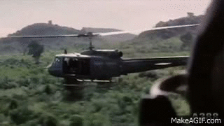
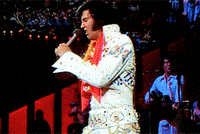
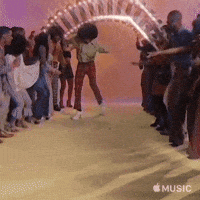

top stories from the 70's
Historical Impact of the 1970's
The 1970s was a decade of significant cultural, political, and technological changes. It was a time of disco, bell-bottoms, and watergate of course... Have a look through this webpage styled to the 1970's and give the quiz a go at the bottom right of your page ;)
Political Headlines of the era
One of the most defining events in U.S. politics was the Watergate Scandal, which began in 1972 and led to the resignation of President Richard Nixon in 1974. The scandal, involving a break-in at the Democratic National Committee headquarters and subsequent cover-up, resulted in widespread distrust of government and major reforms in political transparency and accountability. In Chile, General Augusto Pinochet led a military coup in 1973, overthrowing the democratically elected government of President Salvador Allende. Pinochet’s regime, characterized by widespread human rights violations, lasted until 1990, leaving a lasting impact on Chile’s political and social landscape. The Vietnam War came to an end in 1975, with the fall of Saigon marking the unification of Vietnam under communist control.
The war’s end left deep scars in both the U.S. and Vietnam, with lasting effects on U.S. foreign policy and global perceptions of American military power. In Europe, the 1973 Oil Crisis caused widespread economic turmoil. Triggered by an oil embargo imposed by OPEC countries in response to Western support of Israel in the Yom Kippur War, the crisis led to skyrocketing oil prices, inflation, and energy shortages. This event marked a shift in global energy policies and had a profound effect on the economies of industrialized nations.
The Musical World
The 1970s saw several major shifts in music history. In 1970, The Beatles officially broke up, ending the group's collective career and leading to individual solo projects. In 1977, Elvis Presley died, marking the loss of one of rock and roll’s most prominent figures. During the same decade, disco and funk music rose to mainstream popularity. Disco became a dominant genre in nightclubs and on the radio, while funk influenced future developments in hip-hop, R&B, and pop music. AC/DC made their debut in the mid-1970s, establishing themselves as a major force in hard rock and heavy metal. Their early releases set the style for many rock bands that followed.
Japanese jazz fusion also grew in popularity during the 1970s. Artists and bands blended jazz with rock and electronic music, contributing to the development of experimental music styles that remain influential today. These events and movements shaped the direction of modern music across multiple genres.
The Sporting Standouts of the 1970's
In 1973, the World Rally Championship (WRC) was created, standardizing international rally competition. The WRC became known for its rapid technical development and the introduction of the Group B era. Michèle Mouton later became the first woman to win a WRC event and lead a major factory team, setting a milestone for women in motorsports. (Group B rally car depicted below)

In boxing, Muhammad Ali returned to prominence after a suspension, fighting major bouts such as the 1971 "Fight of the Century" against Joe Frazier and the 1974 "Rumble in the Jungle" against George Foreman. Ali’s victories had wide social and cultural influence beyond sports. The 1972 Munich Olympics were marked by tragedy after a terrorist attack resulted in the deaths of 11 Israeli athletes and coaches, leading to permanent changes in Olympic security procedures. In football (soccer), the 1970 FIFA World Cup in Mexico was the first to be broadcast live worldwide in color, boosting the sport’s global visibility. Brazil, led by Pelé, won the tournament. The rise of women’s sports also accelerated, with the passage of Title IX in the United States in 1972, mandating gender equality in sports programs at federally funded institutions, influencing sports worldwide over time.
Fashion Trends of the 1970's
The 1970s ushered in a period of dramatic fashion innovation, marked by vivid colors, experimentation, and a break from traditional styles. Early in the decade, platform shoes and bell bottoms rose to prominence, becoming staples for both men and women. Bell bottoms, known for their flared legs, were often paired with bright, patterned shirts, while platform shoes added height and flair. Fashion quickly diversified into distinct movements. The bohemian style favored natural fabrics, flowing maxi dresses, and fringe, reflecting the lasting influence of 1960s counterculture. The rise of disco in the late '70s brought sequined garments, wide-collared shirts, and glamorous jumpsuits, while punk fashion embraced leather, ripped clothing, and rebellious attitudes. Color trends shifted from earthy tones like brown and olive in the early '70s to metallics and neon shades later in the decade. Unisex fashion also gained ground, with flared jeans, platform footwear, and bold prints worn widely across genders. Ultimately, 1970s fashion embodied a spirit of individuality and cultural change, leaving a lasting impact on style for generations to come. 
Technological Advancements
The 1970s marked major advances in technology and digital entertainment. In 1971, IBM introduced the floppy disk, providing a portable method of data storage. That same year, Intel released the first commercial microprocessor, the 4004, enabling the development of smaller, more affordable computers.
The mid-to-late 1970s saw the arrival of the first personal computers. In 1977, Apple launched the Apple II, one of the first mass-produced home computers, and Tandy Corporation released the TRS-80, making personal computing accessible to a broader audience.
In 1973, Motorola engineer Martin Cooper made the first handheld mobile phone call, demonstrating the potential for personal wireless communication. Early mobile phones were large and expensive, but the invention marked the beginning of mobile telecommunications.
At the same time, the global adoption of color television accelerated. By the mid-1970s, color broadcasts became standard in many countries, transforming how media and information were consumed worldwide.

Food Culture of the 1970's
In 1971, Coca-Cola introduced the plastic bottle, revolutionizing beverage packaging and making soft drinks more portable and cost-effective. The shift from glass to plastic significantly increased production and distribution efficiency. In 1973, Momofuku Ando developed instant cup noodles (also known as Cup Noodles), creating a convenient and affordable meal option that became a global staple.

The invention transformed the instant food market, offering a quick and easy solution for busy lifestyles. The household food processor was also introduced in the 1970s, with brands like Cuisinart popularizing the appliance. The food processor made meal preparation faster and easier, allowing home
Pop Culture Highlights
One of the most significant cultural milestones was the release of Star Wars in 1977. Created by George Lucas, Star Wars revolutionized the film industry with its groundbreaking special effects, expansive world-building, and iconic characters. Its success established the modern blockbuster film, leading to a series of sequels, prequels, and an entire franchise that continues to dominate global entertainment today. The Star Wars franchise has influenced film, television, and pop culture for decades, shaping everything from CGI technology to merchandise and fan culture. The 1970s also saw the rise of disco as a dominant cultural force, influencing fashion, dance, and social gatherings. Saturday Night Fever (1977) helped solidify disco's place in mainstream entertainment, while the fashion of the era, including bell-bottoms and platform shoes (see the fashion section), became iconic symbols of the period. Additionally, the 1970s were a pivotal time for social movements. The feminist movement gained significant ground, advocating for gender equality, while environmentalism rose in prominence with the first Earth Day in 1970, influencing public policy and awareness.
.png)
.png)